把纠错写进代码：Lauren Tan 谈怎样信任 Agent 的产出
Lauren Tan 在 AI Engineer CODE 2026 上介绍了她的团队怎样在一个月交付上万个 PR 的同时维持质量。本文梳理她的信任金字塔与验证方法，对照她公开的 pstack 工作流，并讨论这些数字与做法的适用条件。
This note is currently only available in Chinese.
今年 11 月 11 日，Lauren Tan 在 AI Engineer CODE 2026 的主会场做了一场题为《All Code Is Slop (Except Mine)》的分享，时长约十七分钟。她的网名是 poteto，开场时也自称 Potato。她是 React Compiler 核心团队的成员，此前在 Netflix、Meta 和 Cursor 工作，现在参与 Grok Bot 桌面客户端的开发，大会页面标注的单位是 SpaceX Super Intelligence。
这场分享在中文社区的传播，多半集中在几组数字上：她本人上个月向生产环境交付了约 3,000 个 PR，所在团队一个月交付约 11,000 个，被回滚的比例稳定在 0.5% 左右。数字只是开场。她的论点是，有了 Agent 之后，软件工程师的主要工作变成在产出大幅增加的同时维持、甚至提高代码质量，做到这一点的关键在于信任。她所说的信任以对环境的投入为前提：改造 Agent 所处的环境，使它在默认情况下就做对。她说自己花了大约六个月，才到达能够稳定交付数千个 PR 的状态。
上一篇随笔讨论了 Claude Code 团队怎样用分层检查和风险分级减少人工审查。Lauren Tan 关注的是同一个问题的上游：怎样让需要审查的东西本身变少。这篇随笔梳理她的主要论点，对照她公开在 cursor/plugins 仓库中的 pstack 工作流核对细节，并讨论这些做法的适用条件。
纠错应当落在哪一层
她用一个倒置的金字塔说明 Agent 环境的投入顺序。最上面的两层是确定性的：第一层是代码本身，包括 API 设计、架构与重构；第二层是静态分析，包括 lint 规则、类型系统、编译器与各类测试。两层配合，可以约束 Agent 能写出什么，使它默认走正确的路径。第三层是验证，包括运行时验证与形式化验证，用来发现缺陷、检查系统中应当始终成立的性质，也用来确认 Agent 是否理解了目标与意图。最下面一层才是文字，即规则、Skill、AGENTS.md 这类需要判断力才能执行的内容。


由此得到她反复强调的一条原则：每当纠正 Agent 时，先考虑能否把这次纠正变成一项确定性的检查，而不是在规则文件里再添一行。写在代码里的约束可以重复执行，也就更值得信任。
这条原则的理由在于，代码库本身就是 Agent 最大的输入之一。她把代码库比作花园。2024 年，她每天上班审查的是同事写的三个 PR；按她的估计，现在这个数字接近三百。代码几乎以连续的流的形式到来，人已经无法逐一检查新长出的部分，起作用的是代码赖以生长的结构。仓库中残留的变通写法、反模式和已弃用的代码，在下一个 Agent 看来就是既定的做法，会被照着复制，像杂草一样蔓延。清理旧的写法因此也是在改善后续生成的代码。
从设计上排除一类错误
她举的例子来自 Dune，这是 Grok Bot 团队为桌面客户端编写的框架，她形容它类似于面向 Electron 应用的 Next.js。Dune 在技术上并不新奇，特别之处在于其中编码了大量从桌面应用开发中得来的约束与 lint 规则。
第一个例子是 React 的 useEffect。她的经验是，凡是需要细致判断才能用好的 API，往往会产生劣质代码，而 Agent 恰好不擅长使用 useEffect。团队的做法是在产品代码中禁止使用它，只在 Dune 的部分内部 API 中保留。按她的说法，这类问题从此被整类消除，不需要再在代码审查中发现。这是针对他们代码库的选择，并不意味着这个 Hook 在任何场景下都不该使用；框架提供了受支持的写法，检查拒绝的是不恰当的替代写法。
第二个例子是 Electron 的进程边界。Agent 经常把主进程的代码引入渲染进程，造成长任务和界面卡顿。在 Grok Bot 与 Dune 中，仓库顶层有两个目录，分别名为 electron-main 和 electron-renderer，二者之间的引用由依赖图分析工具和 lint 规则禁止。目录名称传达了设计意图，真正执行约束的是检查。
第三个例子不那么直观，涉及代码注释。在 Cursor 的桌面客户端中，Agent 喜欢用 setTimeout、requestAnimationFrame、requestIdleCallback 这类命令式定时器打补丁，所修补的其实是 VS Code 的命令式风格与 React 的声明式风格之间的架构冲突。大量定时器被频繁创建和销毁，引起频繁的垃圾回收，界面因此卡顿。Agent 还为每一处补丁写了注释，解释这种做法为什么合理。下一个 Agent 读到这些注释，会把变通写法当作有意的设计，定时器于是扩散到各处。她还提到 Agent 的另一种倾向：把某一次细小的纠正过度推广，当成此后不能违反的硬性规则。
Grok Bot 团队因此禁止了绝大部分注释，她给出的比例是 99%。理由有三点：注释容易过时，人也很少认真读；注释给了 Agent 一个为偷懒找理由的出口；注释无法强制执行，提醒下一个 Agent 不要做某事，并不能保证它不做。取而代之的是带有明确提示的 lint 错误，告诉 Agent 去修根因，而不是绕过问题。
pstack 中的 correct 工作流把这套方法写成了可以执行的步骤。它假定每一位贡献者都是这样的 Agent：只看得到自己打开的文件，会照搬最近的示例，会走能通过编译的最短路径。在这个假定之下，仓库应当被设计成从一个文件看上去正确的改动，对整个仓库也正确。具体做法是先阅读近期的提交、回滚、审查意见和解释变通写法的注释，把错误归类，同一类错误出现两次才算数。然后按从高到低的顺序选择修复层级：首先用架构消除，让每份状态只有一个所有者、每项任务只有一种受支持的做法，并删除 Agent 可能照抄的旧写法；其次用类型使错误状态无法写出，类型做不到时再加 lint 或 CI 检查，错误信息要指明应该改用的文件、类型或函数；再次是测试；文档和 Agent 规则放在最后，只用于需要判断的情形。
其中有几处细节我认为很实用。如果某种写法在仓库里已经很常见，检查只在改动新增这种写法时失败，不必一次性改动整个仓库。每一项新检查都要证明它会在一个真实的历史错误上失败，本地与 CI 运行相同的命令。确有必要的例外写在出问题的那一行，附上理由、到期日和人的批准。Agent 指令文件中维护一张表，把每条规则与执行它的机制对应起来；如果某条规则已经存在、却没有机制执行，又被违反了，就视为重复错误，在同一次改动中把它提到更高的层级。一条规则所防范的错误已经不可能发生时，就把它删掉。
禁止某种写法时，需要同时提供可行的替代路径。useEffect 的例子之所以成立，是因为 Dune 提供了受支持的 API；如果只是增加禁令，Agent 很可能换一种同样不合适的写法绕过去。禁止注释也有边界。pstack 的 no-comments 工作流保留一类注释，即说明无法由我们改变的外部约束的注释；对于“不要删除”“修改前先找某人”之类声明约束的注释，它会先提议把约束编码为类型、运行时检查、测试或 CI lint，编码之后再删除注释。
审查对象从 diff 转向证据
金字塔的第三层是验证。她说团队的代码审查已经在很大程度上收缩为查看验证产物，例如视频、截图、图表和形式化验证的结果。
最基础的是运行时验证，也就是让 Agent 自己运行代码，并使用人类开发者同样使用的调试工具，例如 Chrome DevTools Protocol。团队的运行时验证 Skill 中有一份功能地图（feature map），类似于从用户视角编写的站点地图，列出应用中所有可用的功能。有了这份地图，用户说“左侧边栏里那个东西”时，Agent 不需要猜测指的是哪个控件，双方有了共同的词汇。Skill 中还附带自定义的命令行工具和驱动程序，Agent 每次复用同一套工具操作应用，既节省 token，工具本身也可以被测试。


pstack 的 create-verification-skill 描述了怎样为一个项目生成这样的验证 Skill。生成的 Skill 包含启动、诊断、驱动、证据与清理几个部分。启动要从空的数据目录到达可用状态，可用指的是确实能够操作，而不是某个进程已经有了响应。诊断是一项只读检查，确认这个实例值得驱动：进程在运行、版本正确、端口属于自己、认证有效。证据部分规定了证明的标准：走真实的用户路径，而不是调用内部的 setter 或测试专用接口；同时记录操作与操作后的状态；在可见结果之外检查副作用，例如写入的文件、插入的行、发出的消息。功能地图中每个功能一页，说明怎样到达、怎样驱动，以及什么样的最终状态证明它正常工作；如果种子数据缺少某个前提，就报告失败并写明原因，不允许为了通过而削弱这条路径。这个工作流还要求把生成的 Skill 从头到尾实际执行一次，清理之后确认证据仍然保留在指定位置，从未执行过的 Skill 只能算草稿。
在运行时验证之外，团队也在尝试形式化方法。她提到，用 TLA+ 对主要的用户流程做模型检查，例如跨多台设备、多个平台的通知；用 Lean 证明一些算法，例如检查团队自研的虚拟化库不会出现闪烁或抖动。她说形式化验证已经发现了不少缺陷，但并不是银弹，只是 Agent 环境中的又一层。此外，团队开始用 Antithesis 开源的 Bombadil 对界面做基于性质的测试，也已经发现了一些界面缺陷。她还为 pstack 编写了 statechart Skill，从用户视角画出状态机，审查者可以把它与视频、截图对照查看。
pstack 的 create-formal-verification-skill 对形式化验证提出了几项要求，在我看来对其他验证手段同样适用。模型要忠于代码，模型中视为不可分割的一步，在代码中也必须是不可分割的一步；如果实现中“检查所有者”与“写入结果”是分开的两步，模型却把它们合成一步，模型检查通过并不能排除实现中的竞态。检查必须能够失败，从未见过失败的检查什么也证明不了，所以要在一个故意破坏的版本上展示它失败，例如删掉一项校验或调换两个步骤的顺序。当前代码违反性质时，如实报告反例，不能削弱性质或模型使其通过。结论要说明范围、边界与假设。还要记录每项检查覆盖的文件和函数，以及最后一次确认二者一致时的提交；代码变化之后，下一个 Agent 能看出验证需要重新检查。
她在这一部分引用了 Cindy 的一条推文。六个月前，Cindy 说自己无法信任 Agent，原因是细微的缺陷不断被合入；六个月后，她每天约 70% 的 token 用在验证上。Lauren Tan 说自己的情况与此相近。她的判断是，这里列出的方法没有一样是新发明，都是成熟的软件工程工具，只是过去理解、编写和维护的成本太高；Agent 大幅降低了这些成本，测试与验证可以做到以前在经济上难以承受的程度。
审查环节也可以要求证据。pstack 的 interrogate 工作流让多个对抗性的审查者尝试破坏一项改动，每条发现都必须由一次实际运行证明，例如一个失败的测试、一段复现脚本或显示错误行为的命令输出，并写明命令、实际输出以及意图所要求的输出。没有运行过的内容不报告，风格、命名、结构以及需要未来的改动才会出现的风险都在此列；“没有发现”也是有效的结果。汇总者会重新运行每条发现的命令，只保留确实违背意图的发现。
这种做法能显著减少无法核查的意见，它的筛选标准也决定了它的盲区。尚未稳定复现的竞态、业务语义还没有明确的问题，在这套标准下会被丢弃，但它们并不因此就不存在。这类问题仍然需要设计层面的判断，或者先把性质写出来，再用模型检查之类的手段去找反例。另一点是证据必须对应最终合入的代码。pstack 的 autopilot-full 中有一句话写得很清楚：一次审查结论只覆盖一个补丁，一次通过的 CI 只覆盖一个 head。之后的变基、冲突解决或依赖变化，都可能使先前的验证结论失效。
先改进内循环，再自动化外循环
分享的最后一部分讨论自动化的顺序。她的建议是，在着手搭建“软件工厂”、把能自动化的一切都自动化之前，每次纠正 Agent 都先从改进代码库做起：先加一条 lint 规则阻止反模式的新增，再清理旧的写法，然后把验证做扎实。如果内层的编码循环产出的是劣质代码，把这个循环自动化只会产出更多劣质代码，还要消耗越来越多的 token。
在这些基础之上，外循环才变得可行。她举的例子是：每次发布新版本时，Grok Bot 会自动创建一个 Cursor 项目，像真实用户一样运行并使用整个应用来做模糊测试，为发现的每个缺陷提交修复 PR，并自动合并。她给出的理由是，代码库已经足够好，PR 在默认情况下往往就是好的，大部分产品代码已经不需要深入的人工审查。


pstack 中与长时间自主运行相关的工作流，体现了同样的顺序。autonomous-run 要求在第一轮迭代之前，把退出条件写成一个可以检查的谓词，例如测试全部通过、复现已修复、N 个 PR 全部合并；每一轮只做证据所支持的最小改动，验证是否推进了谓词，推进了就提交，没有帮助就撤销；进展停滞不是停下的理由，但也绝不能放宽谓词来宣布完成。autopilot-full 为每个 PR 指定一个负责人，从构建一直负责到合并，而结论由一组从未编写这段代码的验证者给出；单凭 CI 通过不能合并；任何放宽检查的操作，例如提高预算或把某项加入白名单，都需要验证者的证明和上层的再次确认，因为负责人本身是希望检查通过的一方。pstack 的 README 对并行的表述也是如此：先能深入地信任一个 Agent 写出可验证的好代码，之后才能放心地并行。
对规模较小的项目来说，这意味着扩大并行之前，先让单个任务的结果稳定可信。可以从一个执行者加一个独立的验证者开始，在这样的配置下确认任务能够可靠完成，再逐步增加互不依赖的任务，同时观察 CI 是否开始排队、多个 Agent 是否争用同一个运行环境、是否在重复探索同一个问题，以及集成和人工确认是否成为新的瓶颈。
怎样看待这些数字
她在分享中给出的成果包括：团队上个月向生产环境交付约 11,000 个 PR；客户端稳定版大约每天发布一次；10 月有约 227 人至少提交过一个 PR，其中不少是缺少背景的临时贡献者；被回滚的 PR 比例按相对口径反而下降，稳定在 0.5% 左右；启动、输入、打开和切换对话等方面的性能，与上线时相比都有改善。
这些都是讲者对自身团队的报告，没有对照组，阅读时需要注意几点。PR 的数量取决于拆分粒度，同样的工作量可以拆成数量差别很大的 PR。回滚率只统计被撤销的改动，通过后续 PR 向前修复的缺陷不会计入。DORA 把变更失败率定义为部署后需要立即干预的比例，这类部署通常导致回滚或热修复；它还单独定义了部署返工率，即由生产事故引起的计划外部署所占的比例。只看回滚率，会遗漏向前修复所承担的那部分质量成本。跨团队比较时，还需要统一任务难度、投入、观察窗口与统计口径。
这套做法的前提条件同样需要考虑。Grok Bot 团队自己编写并掌控客户端框架，能把约束直接写进框架和 lint；产品是团队成员日常使用的桌面客户端，回归容易被及时发现；她本人花了约六个月建设这套环境。缺少这些条件的团队，可以借鉴的是方法和顺序，具体的禁令和比例未必适用。
与上一篇中的 Claude Code 团队对照，两者的目标相近，都是在不增加回滚和事故的前提下减少人工审查，侧重点有所不同。Claude Code 团队在 PR 层面叠加 AI 审查、风险分级以及合并后的开关和分阶段发布，并持续评测审查器本身；Lauren Tan 则把更多精力放在审查之前，通过 API 设计、框架约束和 lint 让一类错误无法写出，使审查需要关注的范围缩小。两种做法可以并存，后者减少的正是前者需要处理的输入。
结语
这场分享里我最想借鉴的，是对“纠正”这一动作的处理。在规则文件里加一行提醒，成本很低，但下一次换了模型、清空了上下文，它是否生效并没有保证；改成接口、类型或一条会失败的检查，成本更高，效果却可以重复。对个人项目而言，可以先做的几件事成本都不高：每纠正 Agent 一次，就考虑这次纠正能否变成检查；给 Agent 一种实际运行并操作应用的方式，让它交回证据；新增检查时，先确认它会在已知的错误上失败。
参考资料
- Lauren Tan，All Code Is Slop (Except Mine)，AI Engineer CODE 2026，2026-11-11
- AI Engineer，Lauren Tan 讲者页面
- cursor/plugins，pstack（本文依据 2026 年 11 月 17 日查阅的版本）
- pstack，correct
- pstack，no-comments
- pstack，create-verification-skill
- pstack，create-formal-verification-skill
- pstack，interrogate
- pstack，autonomous-run、autopilot-full
- Antithesis，Bombadil: property-based testing for web UIs
- DORA，DORA's software delivery performance metrics